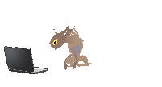
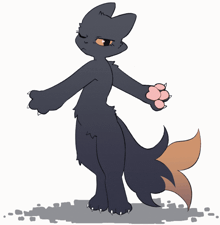
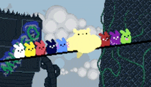
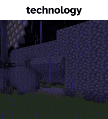
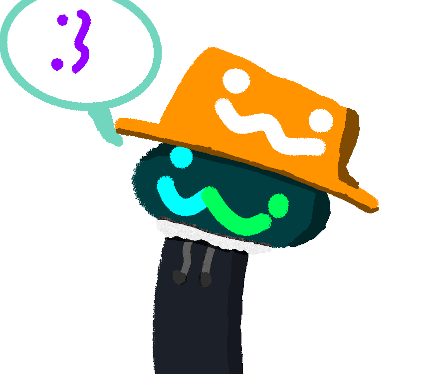
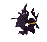

I am Blue Plantex
A shadow entity lost everywhere @w@

ALSO! I should clarify this is a remake of his Straw page, made entirely by TDRP. Check out the original here.
Despite my ability of sniping far away... I suck at finding stuff.

I am currently learning several skills, and here's the list:
 Art
Art Editing
Editing Talking
Talking Soon Blender and Music
Soon Blender and Music Breathing
BreathingI am still learning life.

I may not be able to respond all the time

My time is GMT+8
|
 |
 |
 |
| Death Simulator (Casualties: Unknown) | Slug World (Rain World) | Block Game (Minecraft) |
Did I mention I am a YouTuber?
Ye I am slowly working on my channel
And if you want, please support with any action on my channel.

Sometimes asks questions/theoreticals out of the blue

Original page and structure by Blue Plantex. New HTMl, CSS, and JS made by TDRP - My site.